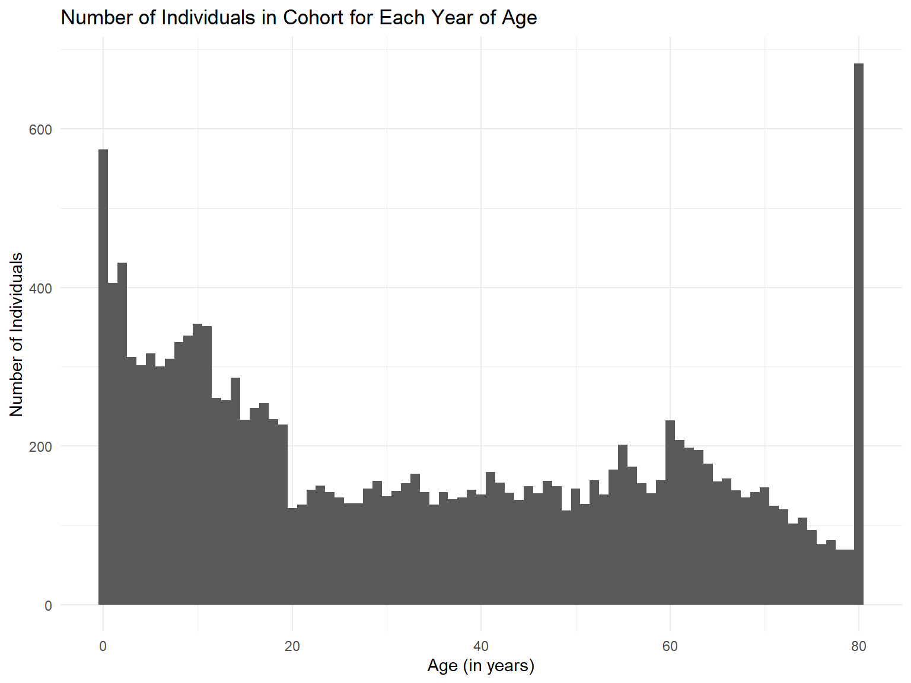

The purpose of this page is to describe how we cleaned the raw data from the CDC website. We begin data from the CDC’s National Health and Nutrition Examination Survey website, which was collected from 2017 to March 2020 pre-pandemic, and have a cleaned, merged data file as our output.
First, all files were saved in a folder located within our project
stored on Github. We then call them individually. nhanes
will be the name for the data frame that combines these six distinct
data files.
# Alcohol Use
nhanes_alq <- read_xpt("raw_data/P_ALQ.XPT")
nhanes <- nhanes_alq
# Demographics
nhanes_demo <- read_xpt("raw_data/P_DEMO.XPT")
nhanes <- full_join(nhanes, nhanes_demo, by = "SEQN")
# Hepatitis
nhanes_heq <- read_xpt("raw_data/P_HEQ.XPT")
nhanes <- full_join(nhanes, nhanes_heq, by = "SEQN")
# Health Insurance
nhanes_hiq <- read_xpt("raw_data/P_HIQ.XPT")
nhanes <- full_join(nhanes, nhanes_hiq, by = "SEQN")
# Immunization
nhanes_imq <- read_xpt("raw_data/P_IMQ.XPT")
nhanes <- full_join(nhanes, nhanes_imq, by = "SEQN")
# Income
nhanes_inq <- read_xpt("raw_data/P_INQ.XPT")
nhanes <- full_join(nhanes, nhanes_inq, by = "SEQN")We’ll clean the column names within these data frames using
janitor::clean_names(), eliminate any individuals whose
data is duplicated, and select for adults aged 18 years and older. Then
we’ll run a basic analysis to get general information on who is included
in this cohort.
# clean names
nhanes <- janitor::clean_names(nhanes)
nhanes_alq <- janitor::clean_names(nhanes_alq)
nhanes_demo <- janitor::clean_names(nhanes_demo)
nhanes_heq <- janitor::clean_names(nhanes_heq)
nhanes_hiq <- janitor::clean_names(nhanes_hiq)
nhanes_imq <- janitor::clean_names(nhanes_imq)
nhanes_inq <- janitor::clean_names(nhanes_inq)
# eliminate duplicates
nhanes %>%
count(seqn) %>%
filter(n > 1)## # A tibble: 0 × 2
## # … with 2 variables: seqn <dbl>, n <int># basic statistics
nhanes %>%
summarize(age_min = min(ridageyr),
age_max = max(ridageyr),
age_mean = mean(ridageyr),
count = n())## # A tibble: 1 × 4
## age_min age_max age_mean count
## <dbl> <dbl> <dbl> <int>
## 1 0 80 33.7 15560Our cohort has nrow(nhanes) individuals, with a mean age
of mean(nhanes$ridageyr) years. It includes information on
alcohol use, demographics, hepatitis, health insurance, immunization,
and income.
Let’s see a plot of the number of individuals in this cohort for each age.
qplot(nhanes$ridageyr, binwidth = 1, main = "Number of Individuals in Cohort for Each Year of Age", xlab = "Age (in years)", ylab = "Number of Individuals")
Notice the peak around age 80. This appears because individuals above 80 years of age were classified as 80. Let’s make sure this is clear by categorizing age in different methods.
# Create crude age variable
nhanes <- nhanes %>%
mutate(agecrude = ridageyr)
# Categorize age in decades
nhanes$age_decile <- cut(nhanes$ridageyr, c(seq(0, 90, 10)), right = F,
labels=c("0-9", "10-19", "20-29", "30-39", "40-49",
"50-59", "60-69", "70-79", "80+"))
nhanes %>% count(age_decile)## # A tibble: 9 × 2
## age_decile n
## <fct> <int>
## 1 0-9 3622
## 2 10-19 2706
## 3 20-29 1378
## 4 30-39 1421
## 5 40-49 1446
## 6 50-59 1565
## 7 60-69 1746
## 8 70-79 994
## 9 80+ 682# Categorize age in quartiles
nhanes$age_quartile <- cut(nhanes$ridageyr, c(0, 25, 50, 75, 100), right = F,
labels=c("<25 years", "25-49 years", "50-74 years", "≥75 years"))
nhanes %>% count(age_quartile)## # A tibble: 4 × 2
## age_quartile n
## <fct> <int>
## 1 <25 years 7013
## 2 25-49 years 3560
## 3 50-74 years 3916
## 4 ≥75 years 1071Now we’ll ensure we have all variables of interest while re-coding some variables to tidy the data.
# Gender
nhanes$male <- NA
nhanes$male[nhanes$riagendr == 1] <- 1 # male
nhanes$male[nhanes$riagendr == 2] <- 0 # female
nhanes %>% count(male, riagendr)## # A tibble: 2 × 3
## male riagendr n
## <dbl> <dbl> <int>
## 1 0 2 7839
## 2 1 1 7721nhanes$gender <- factor(nhanes$male,
labels = c("Female", "Male"))
nhanes %>% count(male, gender, riagendr)## # A tibble: 2 × 4
## male gender riagendr n
## <dbl> <fct> <dbl> <int>
## 1 0 Female 2 7839
## 2 1 Male 1 7721# Race
nhanes$racecat <- NA
nhanes$racecat[nhanes$ridreth3 == 1] <- 0 # Mexican American
nhanes$racecat[nhanes$ridreth3 == 2] <- 1 # Other Hispanic
nhanes$racecat[nhanes$ridreth3 == 3] <- 2 # Non-Hispanic White
nhanes$racecat[nhanes$ridreth3 == 4] <- 3 # Non-Hispanic Black
nhanes$racecat[nhanes$ridreth3 == 6] <- 4 # Non-Hispanic Asian
nhanes$racecat[nhanes$ridreth3 == 7] <- 5 # Other Race - Including Multi-Racial
nhanes %>% count(racecat, ridreth3)## # A tibble: 6 × 3
## racecat ridreth3 n
## <dbl> <dbl> <int>
## 1 0 1 1990
## 2 1 2 1544
## 3 2 3 5271
## 4 3 4 4098
## 5 4 6 1638
## 6 5 7 1019nhanes$race <- factor(nhanes$racecat,
labels = c("Mexican American", "Other Hispanic", "Non-Hispanic White", "Non-Hispanic Black", "Non-Hispanic Asian", "Other/Multi-Racial"))
nhanes %>% count(racecat, race, ridreth3)## # A tibble: 6 × 4
## racecat race ridreth3 n
## <dbl> <fct> <dbl> <int>
## 1 0 Mexican American 1 1990
## 2 1 Other Hispanic 2 1544
## 3 2 Non-Hispanic White 3 5271
## 4 3 Non-Hispanic Black 4 4098
## 5 4 Non-Hispanic Asian 6 1638
## 6 5 Other/Multi-Racial 7 1019# Family Monthly Poverty Level Index (ratio of monthly family income to the HHS poverty guidelines specific to family size)
nhanes$povertyind <- NA
nhanes$povertyind[nhanes$indfmmpi < 5] <- 0 # index of 0-4.99
nhanes$povertyind[nhanes$indfmmpi == 5] <- 1 # index >= 5
nhanes$povertyind[nhanes$indfmmpi == "."] <- NA # missing, code as NA
nhanes %>% count(povertyind, indfmmpi)## # A tibble: 464 × 3
## povertyind indfmmpi n
## <dbl> <dbl> <int>
## 1 0 0 344
## 2 0 0.02 3
## 3 0 0.03 11
## 4 0 0.05 2
## 5 0 0.06 7
## 6 0 0.07 2
## 7 0 0.08 2
## 8 0 0.09 1
## 9 0 0.1 2
## 10 0 0.11 3
## # … with 454 more rowsnhanes$poverty <- factor(nhanes$povertyind,
labels = c("Index of 0-4.99", "Index >=5"))
nhanes %>% count(povertyind, poverty, indfmmpi)## # A tibble: 464 × 4
## povertyind poverty indfmmpi n
## <dbl> <fct> <dbl> <int>
## 1 0 Index of 0-4.99 0 344
## 2 0 Index of 0-4.99 0.02 3
## 3 0 Index of 0-4.99 0.03 11
## 4 0 Index of 0-4.99 0.05 2
## 5 0 Index of 0-4.99 0.06 7
## 6 0 Index of 0-4.99 0.07 2
## 7 0 Index of 0-4.99 0.08 2
## 8 0 Index of 0-4.99 0.09 1
## 9 0 Index of 0-4.99 0.1 2
## 10 0 Index of 0-4.99 0.11 3
## # … with 454 more rows# Education
nhanes$educatnum <- NA
nhanes$educatnum[nhanes$dmdeduc2 == 1] <- 1 # < 9th grade
nhanes$educatnum[nhanes$dmdeduc2 == 2] <- 2 # 9-11th grade (or no diploma)
nhanes$educatnum[nhanes$dmdeduc2 == 3] <- 2 # high school grad or GED
nhanes$educatnum[nhanes$dmdeduc2 == 4] <- 3 # some college or AA degree
nhanes$educatnum[nhanes$dmdeduc2 == 5] <- 4 # college grad or above
nhanes$educatnum[nhanes$dmdeduc2 == 7] <- NA # refused, coded as NA
nhanes$educatnum[nhanes$dmdeduc2 == 9] <- NA # don't know, coded as NA
nhanes$educat <- factor(nhanes$educatnum,
labels=c("<9th grade", "High school/GED", "College", "College Grad+"))
nhanes %>% count(educatnum, educat, dmdeduc2)## # A tibble: 8 × 4
## educatnum educat dmdeduc2 n
## <dbl> <fct> <dbl> <int>
## 1 1 <9th grade 1 719
## 2 2 High school/GED 2 1041
## 3 2 High school/GED 3 2225
## 4 3 College 4 2975
## 5 4 College Grad+ 5 2257
## 6 NA <NA> 7 2
## 7 NA <NA> 9 13
## 8 NA <NA> NA 6328# Hepatitis History
# Hepatitis B
nhanes$hepbhist <- NA
nhanes$hepbhist[nhanes$heq010 == 1] <- 1 # yes
nhanes$hepbhist[nhanes$heq010 == 2] <- 0 # no
nhanes$hepbhist[nhanes$heq010 == 7] <- NA # refused, code as NA
nhanes$hepbhist[nhanes$heq010 == 9] <- NA # don't know, code as NA
nhanes$hepbhist[nhanes$heq010 == "."] <- NA # missing, code as NA
nhanes %>% count(hepbhist, heq010)## # A tibble: 5 × 3
## hepbhist heq010 n
## <dbl> <dbl> <int>
## 1 0 2 13073
## 2 1 1 101
## 3 NA 7 1
## 4 NA 9 42
## 5 NA NA 2343nhanes$hepb <- factor(nhanes$hepbhist,
labels = c("No History of Hepatitis B", "History of Hepatitis B"))
nhanes %>% count(hepbhist, hepb, heq010)## # A tibble: 5 × 4
## hepbhist hepb heq010 n
## <dbl> <fct> <dbl> <int>
## 1 0 No History of Hepatitis B 2 13073
## 2 1 History of Hepatitis B 1 101
## 3 NA <NA> 7 1
## 4 NA <NA> 9 42
## 5 NA <NA> NA 2343 # Hepatitis C
nhanes$hepchist <- NA
nhanes$hepchist[nhanes$heq030 == 1] <- 1 # yes
nhanes$hepchist[nhanes$heq030 == 2] <- 0 # no
nhanes$hepchist[nhanes$heq030 == 7] <- NA # refused, code as NA
nhanes$hepchist[nhanes$heq030 == 9] <- NA # don't know, code as NA
nhanes$hepchist[nhanes$heq030 == "."] <- NA # missing, code as NA
nhanes %>% count(hepchist, heq030)## # A tibble: 4 × 3
## hepchist heq030 n
## <dbl> <dbl> <int>
## 1 0 2 13007
## 2 1 1 163
## 3 NA 9 47
## 4 NA NA 2343nhanes$hepc <- factor(nhanes$hepchist,
labels = c("No History of Hepatitis C", "History of Hepatitis C"))
nhanes %>% count(hepchist, hepc, heq030)## # A tibble: 4 × 4
## hepchist hepc heq030 n
## <dbl> <fct> <dbl> <int>
## 1 0 No History of Hepatitis C 2 13007
## 2 1 History of Hepatitis C 1 163
## 3 NA <NA> 9 47
## 4 NA <NA> NA 2343# Health Insurance Coverage (covered by any health insurance)
nhanes$insanycov <- NA
nhanes$insanycov[nhanes$hiq011 == 1] <- 1 # yes
nhanes$insanycov[nhanes$hiq011 == 2] <- 0 # no
nhanes$insanycov[nhanes$hiq011 == 7] <- NA # refused, code as NA
nhanes$insanycov[nhanes$hiq011 == 9] <- NA # don't know, code as NA
nhanes$insanycov[nhanes$hiq011 == "."] <- NA # missing, code as NA
nhanes %>% count(insanycov, hiq011)## # A tibble: 4 × 3
## insanycov hiq011 n
## <dbl> <dbl> <int>
## 1 0 2 1852
## 2 1 1 13671
## 3 NA 7 8
## 4 NA 9 29nhanes$insany <- factor(nhanes$insanycov,
labels = c("No", "Yes"))
nhanes %>% count(insanycov, insany, hiq011)## # A tibble: 4 × 4
## insanycov insany hiq011 n
## <dbl> <fct> <dbl> <int>
## 1 0 No 2 1852
## 2 1 Yes 1 13671
## 3 NA <NA> 7 8
## 4 NA <NA> 9 29# Immunization Status
nhanes$hepbvaxhist <- NA
nhanes$hepbvaxhist[nhanes$imq020 == 1] <- 0 # at least three doses
nhanes$hepbvaxhist[nhanes$imq020 == 2] <- 1 # less than three doses
nhanes$hepbvaxhist[nhanes$imq020 == 3] <- 2 # no doses
nhanes$hepbvaxhist[nhanes$imq020 == 7] <- NA # refused, code as NA
nhanes$hepbvaxhist[nhanes$imq020 == 9] <- NA # don't know, code as NA
nhanes$hepbvaxhist[nhanes$imq020 == "."] <- NA # missing, code as NA
nhanes %>% count(hepbvaxhist, imq020)## # A tibble: 5 × 3
## hepbvaxhist imq020 n
## <dbl> <dbl> <int>
## 1 0 1 6677
## 2 1 2 871
## 3 2 3 6066
## 4 NA 7 8
## 5 NA 9 1938nhanes$hepbvax <- factor(nhanes$hepbvaxhist,
labels = c("At Least Three Doses", "Less Than Three Doses", "No Doses"))
nhanes %>% count(hepbvaxhist, hepbvax, imq020)## # A tibble: 5 × 4
## hepbvaxhist hepbvax imq020 n
## <dbl> <fct> <dbl> <int>
## 1 0 At Least Three Doses 1 6677
## 2 1 Less Than Three Doses 2 871
## 3 2 No Doses 3 6066
## 4 NA <NA> 7 8
## 5 NA <NA> 9 1938Now we’ll restrict the data frame further to include only those individuals with complete data for our variables of interest. We’ll also include a table that shows how many individuals are being excluded and why.
# Make a table to show how many subjects are excluded and why
fig1 <- matrix(nrow=10, ncol=2)
colnames(fig1) <- c("Subjects"," -->Excluded")
rownames(fig1) <- c(1:nrow(fig1))
dropline <- 1
dropincrement <- function() {
fig1[dropline, 1] <<- nrow(nhanes)
fig1[dropline - 1, 2] <<- fig1[dropline - 1, 1] - fig1[dropline, 1]
dropline <<- dropline + 1
}
rownames(fig1)[dropline] <- "All (NHANES)"
dropincrement()
rownames(fig1)[dropline] <- "No Missing Age"
nhanes <- nhanes[complete.cases(nhanes$agecrude), ] # Drops observation if age is missing
dropincrement()
rownames(fig1)[dropline] <- "No Missing Gender"
nhanes <- nhanes[complete.cases(nhanes$gender), ] # Drops observation if gender is missing
dropincrement()
rownames(fig1)[dropline] <- "No Missing Race"
nhanes <- nhanes[complete.cases(nhanes$race), ] # Drops observation if missing race
dropincrement()
rownames(fig1)[dropline] <- "No Missing Poverty"
nhanes <- nhanes[complete.cases(nhanes$poverty), ] # Drops observation if missing poverty
dropincrement()
rownames(fig1)[dropline] <- "No Missing Education"
nhanes <- nhanes[complete.cases(nhanes$educat), ] # Drops observation if missing education
dropincrement()
rownames(fig1)[dropline] <- "No Missing Insurance Coverage"
nhanes <- nhanes[complete.cases(nhanes$insany), ] # Drops observation if missing insurance coverage
dropincrement()
rownames(fig1)[dropline] <- "No Missing Hepatitis B History"
nhanes <- nhanes[complete.cases(nhanes$hepb), ] # Drops observation if missing Hepatitis B History
dropincrement()
rownames(fig1)[dropline] <- "No Missing Hepatitis C History"
nhanes <- nhanes[complete.cases(nhanes$hepc), ] # Drops observation if missing Hepatitis C History
dropincrement()
rownames(fig1)[dropline] <- "No Missing Hepatitis B Vaccination Status"
nhanes <- nhanes[complete.cases(nhanes$hepbvax), ] # Drops observation if missing Hepatitis B Vaccination Status
dropincrement()
fig1## Subjects -->Excluded
## All (NHANES) 15560 0
## No Missing Age 15560 0
## No Missing Gender 15560 0
## No Missing Race 15560 3236
## No Missing Poverty 12324 5155
## No Missing Education 7169 7
## No Missing Insurance Coverage 7162 24
## No Missing Hepatitis B History 7138 14
## No Missing Hepatitis C History 7124 826
## No Missing Hepatitis B Vaccination Status 6298 NA# Select for relevant variables and drop observations with NAs in relevant columns
nhanes =
nhanes %>%
select(agecrude, age_decile, age_quartile, gender, race, poverty, educat, insany, hepb, hepc, hepbvax) %>%
drop_na(agecrude, gender, race, poverty, educat, insany, hepb, hepc, hepbvax)Now we can save the cleaned data frame as a file.
save(nhanes, file = "merged_nhanes.RData")